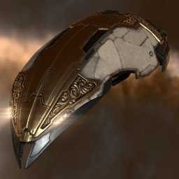
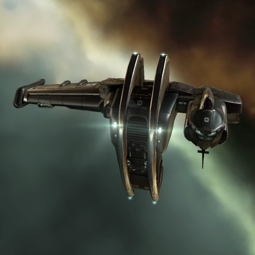

Главная страница
Дерево кораблей
Статистика
Некотрые корабли

Impairor
Тип корабля: Корвет
Государство/Организация: Amarr
Стоимость: -
Описание
Массовый выпуск корветов типа «Импэйрор» был налажен Амаррской Империей много десятков лет назад. Они являются самыми распространенными кораблями в пределах амаррских границ, и равным образом используются в качестве обычных торговых судов и малотоннажных транспортов для перевозки рабов.

Velator
Тип корабля: Корвет
Государство/Организация: Gallente
Стоимость: -
Описание
Корветы типа «Велатор» — одни из самых старых кораблей, состоящих на вооружении флота Галлентской Федерации. При выпуске в свободную продажу «велаторы» предназначались для скоростной перевозки пассажиров, однако со временем на месте кают появились дополнительные точки монтажа орудийных и пусковых установок — «Велатор» был признан в качестве малотоннажного боевого корабля. Несмотря на смену профессии, «Велатор» по-прежнему отлично подходит для перевозки грузов и добычи сырья.
Ibis
Тип корабля: Корвет
Государство/Организация: Caldari
Стоимость: -
Описание
Корветы типа «Ибис», выпускаемые корпорациями Государства Калдари — это малотоннажные, но очень крепкие корабли, отлично справляющиеся с перевозкой грузов и добычей сырья; «Ибисы» надёжны, корабль этого типа — отличный выбор для начинающего пилота.
Reaper
Тип корабля: Корвет
Государство/Организация: Minmatar
Стоимость: -
Описание
Корветы типа «Рипер» — самые маленькие фрегаты Республики, по своим характеристикам не сильно отличающиеся от палубных истребителей. Они очень дешевы и массово используются для быстрых рейдерских акций как матарскими правоохранительными органами, так и нарушителями закона.